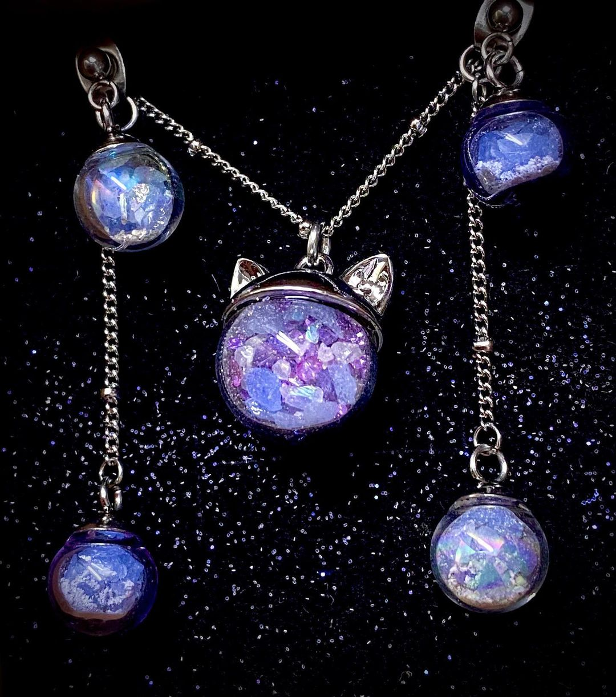

木然貓日常
愛貓寵物骨灰紀念飾品
【永恆灰燼之牙牙小姐的新居】
台北客製化寵物骨灰飾品，骨灰項鍊，骨灰耳環，玻璃造型飾品，寵物臨終服務
愛貓愛犬紀念飾品，木然貓日常，客製化飾品，客製化寵物肖像插畫
寵物臨終後能以什麼方式紀念?
寵物臨終的歸所?
將心愛的寵物骨粉、牙齒、舍利花做成的飾品
主人的思念與愛，讓上天堂的小寶貝們有個特別的新居，帶在身上，當作永遠的寄託。
今天要來分享一個感動溫暖的創作~
客人很細心的把牙牙交託，木然貓拆封前的也是小心翼翼與呵護
對方希望能將思念愛貓帶在身上作為一個精神寄託
客人分享了他的夢境，與寵物在夢中相逢的事蹟，牙牙似乎很開心呢。
於是木然貓便畫下了我腦海中的想像~
客製化寵物肖像插畫
牙牙小姐電繪畫像【星空夢中纜車】
電腦繪圖作業~
不小心做了很多顏色~
拿去7-11 ibon 列印明信片啦~
製作流程
客人理想中的概念圖
希望有點發光效果，跟灰燼的點綴
於是我們往藍色或紫色系去做堆疊
這次採用的是【泡泡透明玻璃罩】+【紫色玻璃罩】
【泡泡透明玻璃罩】

【紫色玻璃罩】
營造輕柔感與透明質地來襯托夜光石的天然之美骨灰點綴其中增添了雅致
【雙邊玻璃球耳扣式珠鍊耳飾】
【日本貓咪玻璃球醫療鋼項鍊】
成品展示
貓咪造型帽蓋+紫色系列礦砂+藍色夜光石+紫色小圓球珠
完成啦~有種靜謐祥和的感覺呢
帶點夢幻寧靜的氣息，
牙牙小姐請放心入住吧!